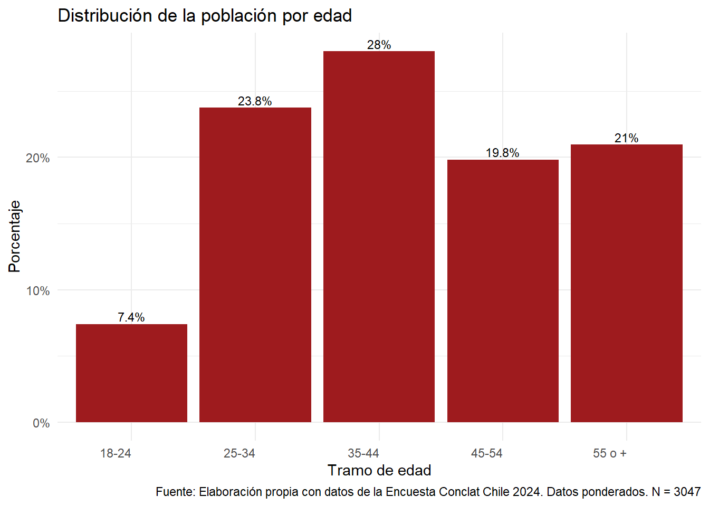
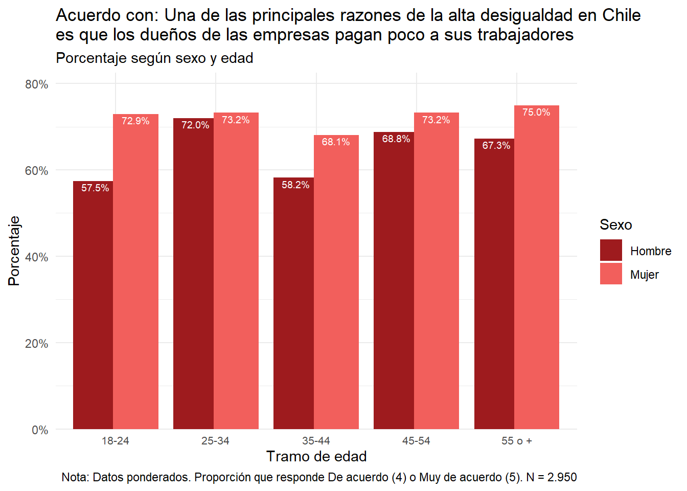

load("output/data/datos-cut.Rdata")
# base survey
data_svy <- as_survey_design(data, weights = rake_wb2)5 Gráficos 4: Clase
5.1 Cargar datos
5.2 Gráficos
5.2.1 clase 1 reduced
# Calcular proporciones ponderadas solo por clase social
tabla_total <- data_svy %>%
filter(!is.na(wrightclass1_reduced)) %>%
group_by(wrightclass1_reduced) %>%
summarise(prop = survey_mean(vartype = NULL, proportion = TRUE)) %>%
ungroup()
# Gráfico
ggplot(tabla_total, aes(x = wrightclass1_reduced, y = prop)) +
geom_col(fill = "#9e1b1e") +
scale_y_continuous(labels = scales::percent_format(accuracy = 1)) +
geom_text(
aes(label = paste0(round(prop * 100, 1), "%")),
vjust = -0.3,
color = "black",
size = 3
) +
labs(
title = "Distribución de la población por clase social",
caption = "Nota: Datos ponderados.",
x = "Clase social",
y = "Porcentaje"
) +
theme_minimal() +
theme(axis.text.x = element_text(angle = 45, hjust = 1))ggsave("output/graph4/class1.png", width = 10, height = 6, dpi = 300)5.2.2 clase 2 reduced
# Calcular proporciones ponderadas solo por clase social
tabla_total <- data_svy %>%
filter(!is.na(wrightclass1_reduced)) %>%
group_by(wrightclass2_reduced) %>%
summarise(prop = survey_mean(vartype = NULL, proportion = TRUE)) %>%
ungroup()
# Gráfico
ggplot(tabla_total, aes(x = wrightclass2_reduced, y = prop)) +
geom_col(fill = "#9e1b1e") +
scale_y_continuous(labels = scales::percent_format(accuracy = 1)) +
geom_text(
aes(label = paste0(round(prop * 100, 1), "%")),
vjust = -0.3,
color = "black",
size = 3
) +
labs(
title = "Distribución de la población por clase social (2)",
caption = "Nota: Datos ponderados.",
x = "Clase social",
y = "Porcentaje"
) +
theme_minimal() +
theme(axis.text.x = element_text(angle = 45, hjust = 1))
ggsave("output/graph4/class2.png", width = 10, height = 6, dpi = 300)5.2.3 clase x sexo
# Calcular totales ponderados por clase x sexo
tabla_sex_norm <- data_svy %>%
filter(!is.na(wrightclass1_reduced), !is.na(sexo)) %>%
group_by(wrightclass1_reduced, sexo) %>%
summarise(n = survey_total(vartype = NULL)) %>%
ungroup() %>%
# (opcional) asegurar combinaciones faltantes con 0
complete(wrightclass1_reduced, sexo, fill = list(n = 0)) %>%
group_by(sexo) %>%
mutate(prop = n / sum(n)) %>% # proporción dentro de cada sexo
ungroup()
# Gráfico: barras agrupadas (dodge), normalizadas dentro de cada sexo
ggplot(tabla_sex_norm, aes(x = wrightclass1_reduced, y = prop, fill = sexo)) +
geom_col(position = position_dodge(width = 0.8)) +
scale_fill_manual(values = c("Mujer" = "#f25f5c", "Hombre" = "#9e1b1e")) +
scale_y_continuous(labels = scales::percent_format(accuracy = 1)) +
geom_text(
aes(label = paste0(round(prop * 100, 1), "%")),
position = position_dodge(width = 0.8),
vjust = -0.3,
size = 2.8
) +
labs(
title = "Distribución por clase social dentro de cada sexo",
x = "Clase social",
y = "Porcentaje",
fill = "Sexo",
caption = "Nota: Datos ponderados."
) +
theme_minimal() +
theme(axis.text.x = element_text(angle = 45, hjust = 1))
ggsave("output/graph4/class1_sexo.png", width = 10, height = 6, dpi = 300)5.2.4 sexo x clase
# Calcular proporciones ponderadas por clase social y sexo
tabla <- data_svy %>%
filter(
!is.na(wrightclass1_reduced),
!is.na(sexo)
) %>%
group_by(wrightclass1_reduced, sexo) %>%
summarise(prop = survey_mean(vartype = NULL, proportion = TRUE)) %>%
ungroup()
# Gráfico
ggplot(tabla, aes(x = wrightclass1_reduced, y = prop, fill = sexo)) +
geom_col(position = "dodge") +
scale_fill_manual(values = c("Mujer" = "#f25f5c", "Hombre" = "#9e1b1e")) +
scale_y_continuous(labels = scales::percent_format(accuracy = 1)) +
geom_text(
aes(label = round(prop * 100, 1)),
position = position_dodge(width = 0.8),
vjust = 1.3,
color = "white",
size = 3
) +
labs(
title = "Porcentaje de hombres y mujeres en cada categoría de clase social",
caption = "Nota: Datos ponderados.",
x = "Clase social",
y = "Porcentaje",
fill = "Sexo"
) +
theme_minimal() +
theme(
axis.text.x = element_text(angle = 45, hjust = 1)
)
ggsave("output/graph4/class1_sexo_by_class.png", width = 10, height = 6, dpi = 300)5.2.5 sexo x clase 2
# 1) Totales ponderados por clase x sexo y proporciones dentro de cada clase
tabla_stack <- data_svy %>%
filter(!is.na(wrightclass1_reduced), !is.na(sexo)) %>%
group_by(wrightclass1_reduced, sexo) %>%
summarise(n = survey_total(vartype = NULL)) %>% # totales ponderados
group_by(wrightclass1_reduced) %>%
mutate(prop = n / sum(n)) %>% # % dentro de cada clase
ungroup()
# 2) Gráfico apilado (cada barra suma 100%)
ggplot(tabla_stack, aes(x = wrightclass1_reduced, y = prop, fill = sexo)) +
geom_col(position = "stack") +
scale_fill_manual(values = c("Mujer" = "#f25f5c", "Hombre" = "#9e1b1e")) +
scale_y_continuous(labels = scales::percent_format(accuracy = 1)) +
geom_text(
aes(label = paste0(round(prop * 100, 1), "%")),
position = position_stack(vjust = 0.5),
color = "white",
size = 2.8
) +
labs(
title = "Composición por sexo dentro de cada clase social",
caption = "Nota: Datos ponderados.",
x = "Clase social",
y = "Porcentaje dentro de la clase",
fill = "Sexo"
) +
theme_minimal() +
theme(axis.text.x = element_text(angle = 45, hjust = 1))
ggsave("output/graph4/class1_sexo_by_class_2.png", width = 10, height = 6, dpi = 300)5.2.6 función acuerdo
plot_binary_by <- function(
data, # poner la data svy
var, # variable binaria 0/1
x_var, # categórica para eje X
fill_var, # categórica para fill
title, # título del gráfico
# ---- Etiquetas ----
x_label = NULL,
y_label = "Porcentaje",
fill_label = NULL,
subtitle = "Porcentaje según sexo y clase social",
caption = NULL,
# ---- Porcentajes ----
label_accuracy = 0.1,
axis_accuracy = 1,
# ---- Estilo y escala ----
expand_y = TRUE,
palette = NULL,
dodge_width = 0.8,
# ---- Texto eje X (nuevo) ----
x_text_angle = 0, # 0, 45, 90 típicamente
x_text_hjust = NULL, # si NULL, se decide según ángulo
x_text_vjust = NULL, # si NULL, se decide según ángulo
x_text_size = 8, # tamaño de fuente
# ---- Guardado ----
file = NULL,
width = 8,
height = 5,
dpi = 300,
# ---- Comportamiento ----
show = TRUE,
save = TRUE,
return_df = FALSE,
...
) {
var_name <- as_name(ensym(var))
x_name <- as_name(ensym(x_var))
fill_name <- as_name(ensym(fill_var))
x_label <- x_label %||% as_label(enquo(x_var))
fill_label <- fill_label %||% as_label(enquo(fill_var))
df <- data %>%
filter(
!is.na({{ x_var }}),
!is.na({{ fill_var }}),
!is.na({{ var }})
) %>%
group_by({{ x_var }}, {{ fill_var }}) %>%
summarise(prop = survey_mean({{ var }}, na.rm = TRUE),
.groups = "drop")
N_unw <- data %>%
filter(
!is.na({{ x_var }}),
!is.na({{ fill_var }}),
!is.na({{ var }})
) %>%
summarise(n = n()) %>% pull(n)
if (is.null(caption)) {
caption <- paste0(
"Nota: Datos ponderados. Proporción que responde De acuerdo (4) o Muy de acuerdo (5). N = ",
format(N_unw, big.mark = ".", decimal.mark = ",")
)
}
y_scale <- if (isTRUE(expand_y)) {
scale_y_continuous(labels = percent_format(accuracy = axis_accuracy),
expand = expansion(mult = c(0, 0.1)))
} else {
scale_y_continuous(labels = percent_format(accuracy = axis_accuracy))
}
# Defaults razonables para hjust/vjust según ángulo
.hjust <- if (is.null(x_text_hjust)) {
if (x_text_angle == 0) 0.5 else 1
} else x_text_hjust
.vjust <- if (is.null(x_text_vjust)) {
if (x_text_angle == 90) 0.5 else 1
} else x_text_vjust
p <- ggplot(df, aes(x = {{ x_var }}, y = prop, fill = {{ fill_var }})) +
geom_col(position = position_dodge(width = dodge_width)) +
geom_text(
aes(label = percent(prop, accuracy = label_accuracy)),
position = position_dodge(width = dodge_width),
vjust = 1.3,
size = 2.5,
color = "white"
) +
(if (is.null(palette)) scale_fill_discrete() else scale_fill_manual(values = palette)) +
y_scale +
labs(
title = title,
subtitle = subtitle,
caption = caption,
x = x_label,
y = y_label,
fill = fill_label
) +
theme_minimal() +
theme(
axis.text.x = element_text(angle = x_text_angle, hjust = .hjust, vjust = .vjust, size = x_text_size)
)
if (isTRUE(show)) print(p)
if (isTRUE(save)) {
if (is.null(file)) {
if (!dir.exists("output/graph4")) dir.create("output/graph4", recursive = TRUE)
file <- file.path("output/graph4", paste0(var_name, "_by_", x_name, "_and_", fill_name, ".png"))
} else {
dir_to_make <- dirname(file)
if (!dir.exists(dir_to_make)) dir.create(dir_to_make, recursive = TRUE)
}
ggsave(filename = file, plot = p, width = width, height = height, dpi = dpi, ...)
}
if (isTRUE(return_df)) {
return(invisible(list(plot = p, data = df)))
} else {
return(invisible(p))
}
}5.2.7 c05_02 x clase x sexo
plot_binary_by(
data = data_svy,
var = c05_02_acuerdo,
x_var = wrightclass1_reduced,
fill_var = sexo,
title = "Acuerdo con: Una de las principales razones de la alta desigualdad en Chile \nes que los dueños de las empresas pagan poco a sus trabajadores",
x_label = "Clase social",
fill_label = "Sexo",
palette = c("Mujer"="#f25f5c","Hombre"="#9e1b1e"),
x_text_angle = 45
)
5.2.8 c05_03 x clase x sexo
plot_binary_by(
data = data_svy,
var = c05_03_acuerdo,
x_var = wrightclass1_reduced,
fill_var = sexo,
title = "Acuerdo con: El alto nivel de vida de los dueños de las empresas es resultado \nde lo poco que pagan a sus trabajadores",
x_label = "Clase social",
fill_label = "Sexo",
palette = c("Mujer"="#f25f5c","Hombre"="#9e1b1e"),
x_text_angle = 45
)5.2.9 c06_02 x clase x sexo
plot_binary_by(
data = data_svy,
var = c06_02_acuerdo,
x_var = wrightclass1_reduced,
fill_var = sexo,
title = "Acuerdo con: Apoyaría una reforma para crear un sistema solidario de reparto \nsi eso permite subir las pensiones",
x_label = "Clase social",
fill_label = "Sexo",
palette = c("Mujer"="#f25f5c","Hombre"="#9e1b1e"),
x_text_angle = 45
)
5.2.10 c07_01 x clase x sexo
plot_binary_by(
data = data_svy,
var = c07_01_acuerdo,
x_var = wrightclass1_reduced,
fill_var = sexo,
title = "Acuerdo con: Aumentar los impuestos a los más ricos para financiar \nprogramas sociales",
x_label = "Clase social",
fill_label = "Sexo",
palette = c("Mujer"="#f25f5c","Hombre"="#9e1b1e"),
x_text_angle = 45
)
5.2.11 c07_03 x clase x sexo
plot_binary_by(
data = data_svy,
var = c07_03_acuerdo,
x_var = wrightclass1_reduced,
fill_var = sexo,
title = "Acuerdo con: Implementar leyes para que los sindicatos tengan más poder \nde negociación",
x_label = "Clase social",
fill_label = "Sexo",
palette = c("Mujer"="#f25f5c","Hombre"="#9e1b1e"),
x_text_angle = 45
)
5.2.12 c07_04 x clase x sexo
plot_binary_by(
data = data_svy,
var = c07_04_acuerdo,
x_var = wrightclass1_reduced,
fill_var = sexo,
title = "Acuerdo con: Redistribuir las riquezas desde quienes tienen más recursos \nhacia quienes tienen menos recursos",
x_label = "Clase social",
fill_label = "Sexo",
palette = c("Mujer"="#f25f5c","Hombre"="#9e1b1e"),
x_text_angle = 45
)5.2.13 c07_05 x clase x sexo
plot_binary_by(
data = data_svy,
var = c07_05_acuerdo,
x_var = wrightclass1_reduced,
fill_var = sexo,
title = "Acuerdo con: Promover la igualdad entre hombres y mujeres",
x_label = "Clase social",
fill_label = "Sexo",
palette = c("Mujer"="#f25f5c","Hombre"="#9e1b1e"),
x_text_angle = 45
)5.2.14 c07_06 x clase x sexo
plot_binary_by(
data = data_svy,
var = c07_06_acuerdo,
x_var = wrightclass1_reduced,
fill_var = sexo,
title = "Acuerdo con: Garantizar la educación universitaria pública y gratuita",
x_label = "Clase social",
fill_label = "Sexo",
palette = c("Mujer"="#f25f5c","Hombre"="#9e1b1e"),
x_text_angle = 45
)